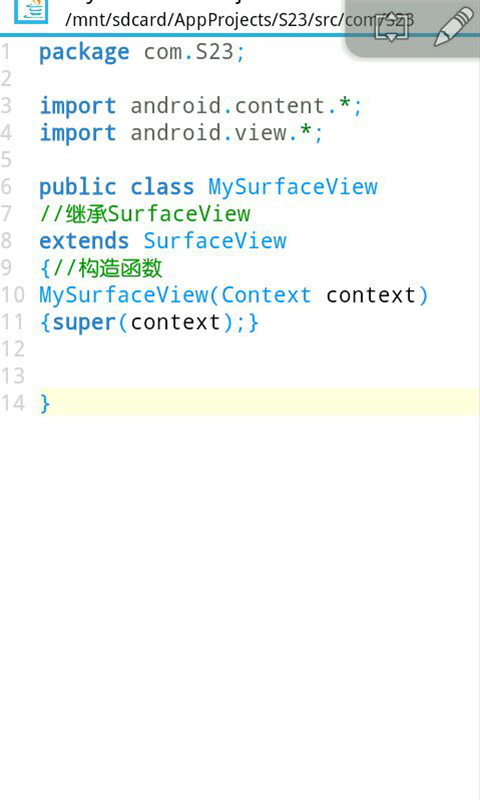

SurfaceView介绍(23课)
当系统的控件满足不了我们的要求的时候，我们就需要自定义控件，这节课我们介绍一下SurfaceView。
我们新建一个项目，新建一个类叫做MySurfaceView，然后继承SurfaceView，再写上构造函数，这个就是我们的自定义视图了。要导入一下，怎么导入之前说过很多遍了吧。

然后我们打开我们的MainActivity代码，我们设置显示我们的自定义视图。我们设置成全屏，运行就是一块黑黑的屏幕，因为我们还没有绘制任何内容。
接下来我们再打开我们的SurfaceView的代码，我们实现SurfaceHolder.Callback接口，这个是SurfaceView的监听器，我们重写里面的抽象函数，怎么重写的，以前有说过，在波浪线处长按点击Fix，再点击下一项，开发工具会自动帮我们写上代码，我们看里面3个函数，视图被创建的时候会执行surfaceCreated方法，视图状态发生改变的时候会执行surfaceChanged方法，当视图销毁的时候会执行surfaceDestroyed方法。
然后我们声明一个SurfaceHolder对象，这个是用来对视图进行控制，声明一个笔刷Paint对象，用来设置绘制的一些参数，声明一个画布Canvas对象，用来在屏幕绘制内容，然后通过getHolder()方法实例化SurfaceHolder，addCallback绑定视图监听器，实例化笔刷。


当视图被创建会执行surfaceCreated()方法，getWidth()是获取屏幕的宽度，单位是像素，getHeight方法是得到屏幕的高度，必须在视图创建才能获取到。我们通过sfh.lockCanvas()方法得到一个画布对象，就可以用画布在屏幕上面绘制内容了。canvas.drawRGB(255,255,255)方法是将屏幕刷白，里面3个整形参数0到255的数值，分别代表红，绿，蓝，默认屏幕是黑色的。drawText()方法是绘制文字，里面4个参数，第1个是显示的内容，第2个是x坐标，第3个参数是y坐标，以屏幕左上角为原点，右方向x坐标增加，下方向y坐标增加，第4个参数是笔刷实例，因为默认绘制的文字是黑色的，我们设置一下笔刷的参数，文字大小，笔刷颜色0xffff0000代表红色，前面两位ff代表透明度，后面六位代表红，绿，蓝。drawBitmap()方法是绘制图片，第1个参数是位图对象，第2，3个参数代表坐标，第4个参数是笔刷。我们先用BitmapFactory
.decodeResource(getResources(),
R.drawable.ic_launcher)得到一个位图对象，这里的是图标图片。bmp.getWidth是得到图片宽度，bmp.getHeight是图片高度，屏幕宽度一半减去图片宽度的一半，刚好让图片横向居中，屏幕高度减去图片的高度，让图片底部对齐，这样绘制的图片就是底部居中，我们的应用如果要自适屏就要根据屏幕宽，高来进行绘制，当我们绘制完成以后屏幕上不会显示我们的内容，需要通过sfh.unlockCanvasAndPost(canvas)提交我们的画布才会显示。
然后运行我们的项目查看一下效果。
接下来我们实现一个文字跟随手指移动的功能，如果我们想监听触屏事件，需要复写里面的public boolean onTouchEvent
(MotionEvent event)方法，最后要返回真，才能一直监听触屏事件，里面有一个参数，getX()方法是获取x坐标的点击点，getY()方法是获取y坐标的点击点，另外getAction()方法可以得到触屏事件，如果值为0，1，2分别代表点击，抬起，移动，这里我们无论点击，抬起，移动都执行，所以不需要进行判断，然后我们再用Toast输出x坐标和y坐标的内容，我们前面介绍的Toast输出，Toast的内容无法即时的更改，解决方法是只用一个Toast，我们申明一个Toast对象，在构造函数里面对Toast实例化，然后输出坐标内容。获得画布，刷屏，另外也可以画一个和屏幕一样大小的矩形或者绘制一张背景图片进行刷屏，然后在屏幕点击坐标点绘制文字，提交画布，返回真。
运行我们的项目查看效果，手指在屏幕上移动，会在点击点绘制文字。